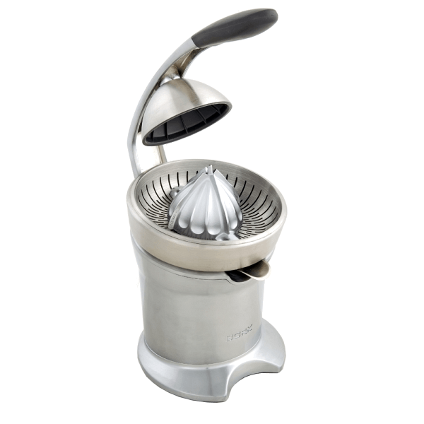
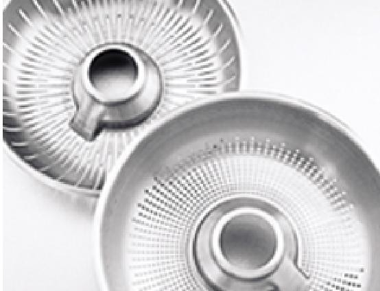

Соковыжиматель BORK Z800

Технические характеристики
- Мощность: 120 Вт
- Длина шнура: 1 м
- Вес прибора: 8.61 кг
- Габариты прибора: 330х220х430 мм
- Срок гарантии: 1 год.
- Литой металлический корпус
- Премиальный дизайн
Особенности
- Запатентованный механизм: электрический и механический пресс
- Конус, чаша и 2 фильтра для сока с мякотью и без мякоти из нержавеющей стали
- Отделение для хранения провода
- Нескользящие ножки
- Пылезащитный пластиковый чехол
Дополнительная информация
- Получение свежевыжатого цитрусового сока достигается абсолютно без усилий. Давление на конус создает не сила пользователя, а механизм рычага. При давлении на рычаг усилие передается на конус, и двигатель запускается автоматически
- 2 фильтра для получения сока с мякотью и без мякоти
- Противокапельная система
- Специальное углубление в прижимном куполе для небольших цитрусовых
- Все съемные части соковыжималки подходят для мытья в посудомоечной машине
- Низкий уровень шума
